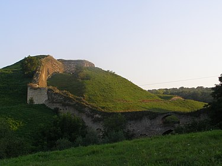

Хотинська фортеця

Етимологія
Назва фортеці невід'ємно пов'язана з містом, яке розвинулося навколо неї. Деякі дослідники вважають, що топонім походить від дієслова «хотіти», оскільки це місце було завжди бажане для древніх поселенців, вони завжди хотіли жити у цьому красивому і багатому краї. Інші пов'язують назву з ім'ям билинного богатиря — Хотин Блудович.
Історія
Хотин на Дністрі
Писемні джерела не містять відомостей про час будівництва як першого кам'яного замку, так і донині існуючої цитаделі. Спочатку це була невелика, збудована слов'янами, дерев'яна фортеця, її незначні рештки виявлені під час археологічних розкопок. Їх результати вказують на існування (VIII—IX ст.) на високому скельному дністровському мисі замку-дитинця із нескладними дерев'яними укріпленнями з напільного боку. Після походу князя Володимира Святославича та приєднання до Київської Русі земель білих хорватів і тиверців у цій місцевості почали зводитись (на межі Х-ХІ) нові фортеці як центри княжої влади і місця перебування намісників. Саме у той період на місті майбутньої цитаделі з'являються перші надійні фортифікації у вигляді земляного валу з дерев'яними заборолами і видовбаного упоперек скелястого мису рову. Ці укріплення охороняли велику переправу на Дністрі, забезпечували захист місцевого населення та стримували грабіжницькі набіги завойовників. Тогочасний літописний Хотінь входив в єдину оборону лінію південно-західних кордонів Київської Русі. Протягом ХІ-ХІІІ ст. Хотинське городище з околицями входили до складу Теребовлянського та Галицького князівств, а також Галицько-Волинського князівства. З розвитком Дністра як торгового шляху, як й інші руські городища на його берегах, забезпечував охорону водної артерії. Вважається, що перші кам'яні фортифікації Хотинської фортеці могли виникнути на межі 1240-1250-их, коли король Данило Галицький укріплював старі і будував нові фортеці для захисту від монгольської навали. Інша думка — що це сталося після 1259 р., коли на вимогу монгол Данило Галицький і Василько Романовичі були змушені зруйнувати всі оборонні споруди князівства, в тому числі й дерев'яно-земляні хотинські, на місці яких і звели пізніше кам'яні. Аналіз будівельного розчину з найдавнішої частини стіни фортеці показав його подібність до київських цем'янкових (вапняних із значною домішкою битої цегли) розчинів ХІ-ХІІ ст. Це свідчить, що перші кам'яні мури могли постати і раніше, у ХІІ-І половині ХІІІ ст., коли не припинялися військові конфлікти між Руським та Угорським королівствами. Територія стародавнього кам'яного замку-цитаделі знаходилася у північній частині сучасного фортечного двору (зараз приблизно від Північної вежі до стін Комендантського палацу). Перша фортеця була невеликою, площею не більше 2 га, обнесена муром і підтрикутним шестиметрової ширини ровом. Від неї збереглися лише залишки стіни, приховані у товщі східного муру-куртини. Вірогідно, основною оборонною спорудою тоді виступала башта на місці нинішньої чотирикутної Північної вежі. Це могла бути башта, відразу вписана в систему мурів, або окрема вежа-донжон, до якої пізніше прибудували стіни приблизно тридцять метрів завдовжки, що утворили підквадратний двір.  Після перемоги литовсько-руського війська князя Ольгерда над татарами у битві на Синіх Водах фортеця відійшла до їх союзників, українських воєвод і господарів з Молдавії, які системно розбудовували і укріплювали Хотинську фортецю, яка входила до 6 найбільших фортець Молдавського князівства. Під час археологічних досліджень в Хотинській фортеці було простежено рештки кам'яної стіни XIII століття Також було знайдено великий скарб монет датованих першою половиною XIII століття
Центр Хотинської волості
З кінця ХІІ століття на півдні Галицько-Волинської князівства починає формуватись земля з напівавтономним статусом. Після монгольської навали зв'язки з галицько-волинськими землями послабилися, що призвело до їх фактичного відокремлення на початку XIV століття, та визнання зверхності Золотої Орди. У середині XIV століття починається занепад Золотої Орди, в залежності від якої перебував край. У 1349 році Королівство Польське захопило Галицько-Волинське князівство. У цей же час на землях у басейні річки Молдова формується нова держава українців і волохів — Молдавське князівство. На південному прикордонні Галицького князівства постає Шипинська земля — практично самостійна адміністративно-територіальна одиниця з власною самоуправою, за яку вели запеклу боротьбу Королівство Польське, Королівство Угорське та Молдовське князівство. Документально вперше згадує Шипинську землю Ян Длугош у 1359 році в зв'язку з походом короля Казимира ІІІ на Молдавію. Приблизні межі описувалися в грамоті 1412 року. Господар Молдавії (1375–91) з роду Драго-Сасів, Петро I Мушат, восени 1377 Шипинську землю (із фортецями Хмелів, Хотин і Чечюнь (чи Цецин; нині м. Чернівці)) остаточно приєднав до Молдавського князівства. «В старину вся Молдавия делилась на три части: нижнюю, верхнюю и Бессарабию» Димитрий Кантемир. Тобто незалежне князівство Молдавія історично складалась з трьох країн: Верхньої («Цара де сус» (див. Кантемир 1973: 21-24)) на півночі (Сучава), Нижньої по центру (Старий Орхей) і Бессарабії ((Кельменецький, Новоселицький (частково), Сокирянський та Хотинський райони Чернівецької області) від Новоселиці до м. Рені і звідти до гирла Дунаю (південна частина Одеської області)). Загальне керівництво землею здійснював воєвода. Хотинська фортеця була центром Хотинської волості («держави»), якою керував староста («державець»).
У складі Молдавського князівства
У 1340-х роках Хотин увійшов до складу молдавського регіону Угорського королівства, а з 1375 року вже перебував у складі незалежного Молдавського князівства, тому з цього часу фортецю будували молдавські господарі. Воєвода і господар, національний герой Молдавії Штефан ІІІ Великий (молд. Стефан чел Маре) значно розширив межі фортеці. Він особисто керував її реконструкцією. Було зведено прикрашений геометричними орнаментами мур завширшки 5-6 і висотою 40 метрів, п'ять башт, рівень двору фортеці підняли на 10 метрів і розділили на Княжий двір і двір Воїнів. Були викопані глибокі підвали для зберігання провіанту. Саме після цієї реконструкції Хотинська фортеця практично повністю набула свого сьогоднішнього вигляду, крім південного прясла мурів та Південної (В'їзної) брами з дерев'яними мостами, зведеними на початку 18 століття турками. Упродовж 14–16 століть вона була резиденцією молдавських господарів. Саме завдяки наявності таких міцних кам'яних фортець українська державність проіснувала в Молдавії найдовше.
Сучасний стан
Станом на листопад 2017 року Андріївська церква знаходиться на реставрації. 17 жовтня 2018 року Президент України Петро Порошенко вніс на розгляд Верховної Ради України законопроєкт № 9208 про передачу Андріївської церкви в постійне користування Вселенському (Константинопольському) патріарху Варфоломію. 18 жовтня 2018 року Верховна Рада України схвалила передачу Андріївської церкви Вселенському Патріархату (при цьому церква залишається в державній власності). 28 листопада 2018 року Кабінет Міністрів України передав Андріївську церкву в Києві в постійне безоплатне користування Представництву двору Вселенського патріархату в Україні. 13 грудня 2020 року (у день Святого Андрія), після 11 років реставраційних робіт, церква відкрилася. Урочисту літургію провів представник Вселенського Патріарха – митрополит Галльський Еммануїл (Адамакіс) разом з настоятелем храму єпископом Команським Михаїлом (Аніщенком). З 15 грудня 2020 року церква відкрита для всіх охочих.У 1476 році фортеця відбила напад османських військ султана Мехмеда ІІ Фатіха. Проте на межі 15–16 століть Молдовське князівство стало васалом Османської імперії та розмістила у Хотинських стінах яничарський гарнізон. Турки посилили обороноздатність фортеці. У 1538 році під проводом Ян-Амора Тарновського місто Хотин було взято військами Королівства Польського. Вони зробили підкоп фортеці, зруйнували 3 башти, частину західної стіни і заклали вибухівку, але фортеця була врятована від руйнування — молдавський господар Петро IV Рареш поспішив укласти мирний договір і присягнути на вірність польському королю Сигізмунду I Старому. Після її здобуття, поляки відновили Хотинську цитадель у 1540–1544 роках, але згодом втратили її. 1561 року фортецю захопили війська під проводом польського шляхтича-авантюриста Альбрехта Ласького, новий тодішній господар Молдавії Яків Василакі Гераклід (союзник Ласького) віддав йому фортецю з навколишніми поселеннями у користування (комендантом фортеці був призначений Іван П'ясецький — родич Дмитра Вишневецького). Через конфлікт між Альбрехтом Лаським та Яковом Гераклідом останній відібрав у поляка фортецю, що перший не пробачив, вирішивши організувати похід проти нього, залучивши до походу Дмитра Вишневецького. У 1563 році Дмитро Вишневецький з п'ятьма сотнями запорозьких козаків знову захопили фортецю й утримували її тривалий час. У травні 1600 року після того, як війська правителя Валахії і Трансильванії Михая Хороброго захопили Сучаву, господар Молдови Єремія Могила зі своїм оточенням, серед якого були його брат Симеон Могила (батько майбутнього київського митрополита Петра Могили) та колишній правитель Трансильванії Сигізмунд Баторій (племінник короля Польщі Стефана Баторія), знайшли прихисток у Хотинській фортеці, якою володіла тоді Польща.
Під владою Османської імперії
У 1615 році польські війська під проводом Самійла Корецького та Михайла Вишневецького знову зайняли Хотин, аби посадити на молдавський трон пропольського претендента Олександра Могилу замість протурецького Штефана Томші. Проте 1617 року за Бушівським мирним договором Річ Посполита відмовилася від втручання в справи Молдавії, а польську залогу було виведено з Хотина.
Хотинська битва 1621
У 1620 році на запрошення молдавського володаря Гаспара Граціані польські війська під проводом великого коронного гетьмана Станіслава Жолкевського знову захоплюють Хотин. Того ж року польські сили зазнають від турецьких військ нищівної поразки під Цецорою, в якій гине сам великий гетьман, проте Хотин залишається в їхніх руках. У жовтні 1621 року козацько-литовсько-польські війська під проводом Петра Сагайдачного (40 тис.) та Яна Кароля Ходкевича (60 тис.) виграли під Хотином битву з турецько-татарськими (220 тис.) військами. 8 жовтня 1621 султан Осман II підписав загалом незручний для Османської імперії Хотинський мирний договір. Згідно з договором, однак, турецько-польський кордон знову мав проходити Дністром, а Польща повертала Хотин туркам. Богдан Хмельницький навесні 1650 року на певний час зайняв Хотин. У 1653 році на лівому березі Дністра у Жванецькій битві брав участь хотинський гарнізон турків.
Хотинська битва 1673
У листопаді 1673 року польсько-молдовсько-українські війська на чолі з великим коронним гетьманом Яном Собеським виграють у турків велику битву під Хотином і займають фортецю. Внаслідок цієї перемоги Ян Собеський здобуває прізвисько «Хотинський лев», а наступного року його обирають новим королем Речі Посполитої. Утім, уже на початку серпня 1674 року турецькі сили повертають собі Хотин; польська армія знову займе його лише в 1684 році. 1699 року Річ Посполита повертає Хотинську фортецю Молдовському князівству під протекторатом Османської імперії згідно з Карловицьким мирним договором. З 1710-х років Хотин перебуває під безпосереднім османським управлінням як центр Хотинської нахіє, або Хотинської райї. На початку XVIII століття перед зростаючою загрозою експансії Московії на південь, Османська імперія вирішила перетворити Хотин на головний форпост на Дністрі. Протягом 1711–1718 років турки за допомогою запрошених французьких інженерів перетворили Хотинську фортецю на один із найнеприступніших бастіонів тодішньої Центрально-Східної Європи. Навколо старого замку спорудили Нову фортецю, яка була розрахована на розміщення всередині 20-тисячного війська. Основу укріплень становили потужні земляні вали, бастіони та широкі рови, вимурувані тесаним каменем. У валах були облаштовані брами з баштами. У Новій фортеці збудували також мечеть із мінаретом. 1739 та 1769 року фортеця була здобута росіянами. 1788 року австрійцями та знову віддана туркам.
Хотинська битва 1788
1788 року місто було взяте в облогу австрійськими військами під командуванням принца Фрідріха та російськими військами генерала Івана Петровича Салтикова. Місто було в облозі 4 місяці і 8 днів. 19 вересня 1788 року місто з комендантом Османом-пашею здалося. Осману-паші та іншим дозволили вивезти всіх своїх людей та все своє добро із замку, фортеці та міста (використано 2700 возів). Іван Салтиков запросив до себе Османа-пашу на обід. Осман-паша був чоловіком Гелени — сестри Софії Клявоне. Софія Клявоне мала зв'язок з Салтиковим. Клявоне через Салтикова передала листи своїй сестрі в Хотинський замок. Не без допомоги Софії туркам дозволили вивезти з Хотина все майно та людей. Після того, як місто капітулювало, в ньому залишилось 16 857 жителів, яким після капітуляції дали провіанту на 8 діб. 1 жовтня 1788 року австрійські та російські війська ввійшли в місто. Місто було порожнім і значно поруйнованим.
Опис фортеці 1788 року
Ось як описав тоді місто саксонський принц Фрідріх Заальфельдский: Хотинська фортеця в формі чотирикутника, 1800 на 730, має четверо воріт. Ворота називались: Водяні, Стамбульські, Бендерські та Корохові. В середині замку знаходяться палац, мечеть, турецька лазня, багато магазинів і 40 різних будинків, в яких могло би розміститись 800 чоловік. Місто розміщене вище фортеці й оточене грабовим палісадом до самої фортеці. Одне передмістя називалось Константинополь, а інше, біля воріт, які виходили на дорогу до Окопів, називалося Румля. Між двома передмістями був сад Османа, який виходив і поза палісад. Малий струмок, який стікав у Дністер, поділяв місто і фортецю на дві частини. Місто було забудоване дерев'яними будинками. У фортеці знаходилося 7 000 війська, комендантом тоді там був Осман та жив ага яничарів Друру-оглу. Його брат був убитий в одній з сутичок під Хотином.
Під владою Російської імперії з 1812
1806 року розпочалася чергова російсько-турецька війна, на початку якої царська армія здобула Хотинську фортецю й утримувала її до підписання Бухарестського договору 1812 року. За його умовами вся територія між Дністром і Прутом увійшла до складу Російської імперії, отримавши назву Бессарабія. У першій половині XIX століття Хотинська фортеця залишалася під наглядом військового відомства: тут здійснювалися ремонтні роботи, перебудовувались оборонні споруди. Але Хотинська твердиня втратила своє колишнє оборонне значення та її передали міському управлінню.
Сучасний стан
24 серпня 1963 року комплекс споруд фортеці (XIII–XVIII) віднесено до пам'яток архітектури УРСР (охоронний № 803), які можна використовувати, але виключно під наукові та музейно-показові установи.
Історико-архітектурний заповідник
12 жовтня 2000 року, за пропозицією Чернівецької обласної державної адміністрації, Кабінет Міністрів України своєю постановою (№ 1539) оголосив комплекс споруд Хотинської фортеці — Державним історико-архітектурним заповідником «Хотинська фортеця». 20 жовтня 2011 року Уряд своїм розпорядженням передав заповідник до сфери управління Міністерства культури України. Загальна площа заповідника становить 16,2828 гектарів (в тому числі в оренді 0,1287 га).